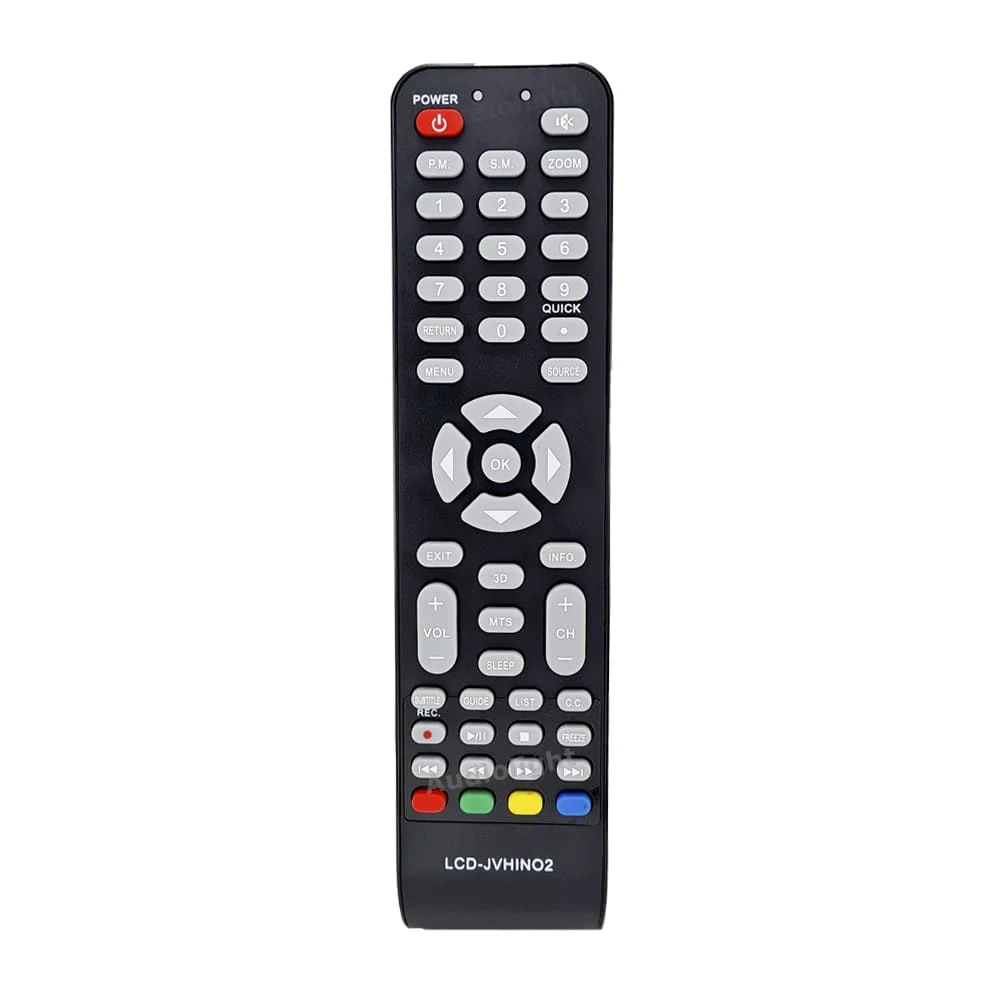
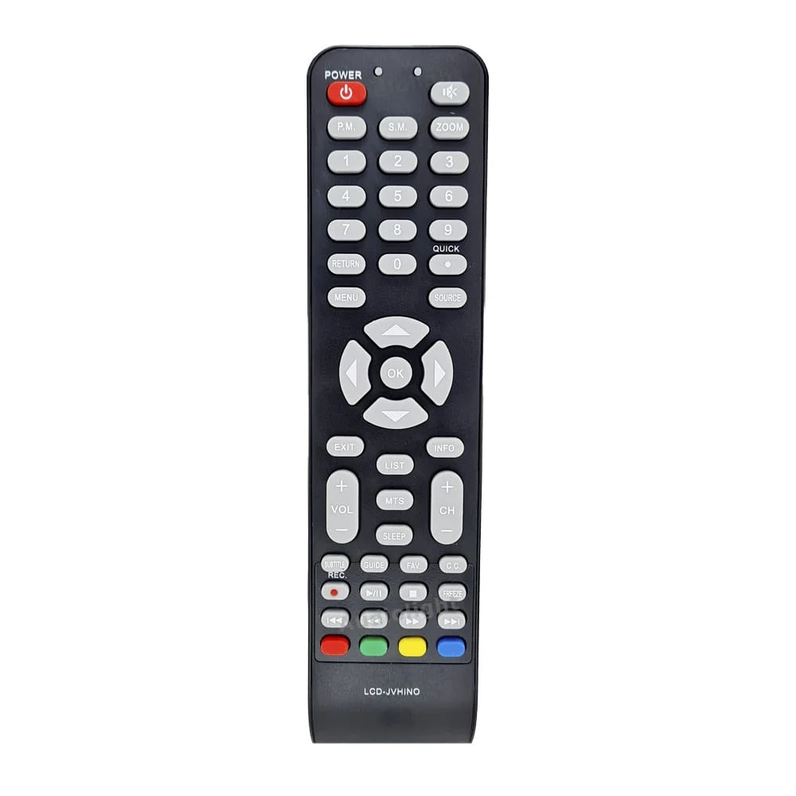
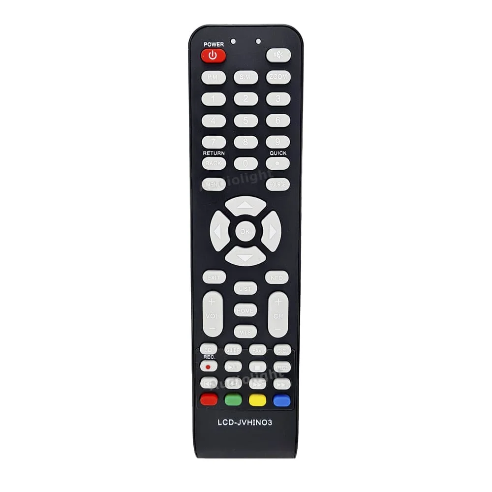

<!-- NOBLEX-JVC- TONOMAC - ADMIRAL - PHILCO - SANYO  -->
            <div class="mb-8">
                <h2 class="text-2xl font-semibold mb-4 custom-bg"> NOBLEX- JVC - TONOMAC - ADMIRAL - PHILCO - SANYO - ILO - PIONEER - HITACHI - MASTER GOLD</h2>
                <div class="horizontal-scroll">
                    <div class="item p-2">
                        
                        <p class="mt-2 text-center">677</p>
                    </div>
                    <div class="item p-2">
                        
                        <p class="mt-2 text-center">678</p>
                    </div>
                    <div class="item p-2">
                        
                        <p class="mt-2 text-center">634</p>
                    </div>
                    <!-- Más controles -->
                </div>


                <br/><br/><br/><br/>
                <footer>
                    <p><strong>MODELOS COMPATIBLES CONOCIDOS: </strong>  
                           TDS1540FT, Philco PLD4015FT, 91PLD3216HTDX, Noblex 40LD875FT, Sanyo LCE40XF15, JVC LT40DA560, ILO LDF40ILO1, Pioneer PLE40FRN3 </p>
                </footer>
            </div>